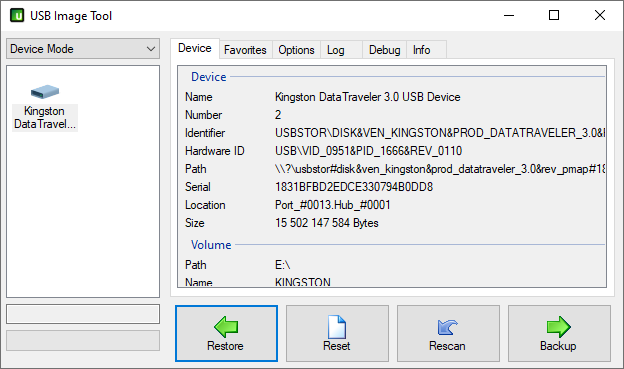

The USB versions of the appliances are provided as Raw Disk Images. They cannot
be simply moved to the USB drive, but must be copied byte by byte to make an
exact copy of the image in case. Refer to the following instructions to perform the cloning.
For experienced users, the dd tool might be a comfortable option, but it is easier to install and use the application Gnome Disc Tool.
- Install the Gnome Disk Tool through the package manager of your Linux distribution. It is usually called gnome-disk-util or gnome-disk-utility.
- After installation, run the tool from your application menu or with the command gnome-disks.
- Choose your USB drive from the list in the application window.
- Delete all existing partitions from the drive by pressing the minus button beneath Volumes.
- After removing all of the existing partitions from your USB drive, press the button
with three horizontal lines in the top right of the window and choose Restore disk
image. A dialog opens where you can browse to and choose the image you want to burn on the drive and start the process.
- During the burning of the image, Gnome disk utility displays a progress bar (Figure 3.3). After 100 % is reached, the drive is ready. Press on the same button with
three horizontal lines as earlier, and choose Standby now to switch of the drive so
it can be removed safely.
- The USB appliance is now ready for use.
For burning the image, in addition to using the built-in Disk Utility app you need to download
ApplePiBaker 1.9.9 (note that newer versions up from 2.0 are not able to burn the drive properly).
- Open the Disk Utility app on your Mac.
- Choose the drive you intend to use from the list on the left.
- Choose MS9-DOS(FAT) as the format from the drop-down menu in the center of the view and
GUID Partition Map as the Scheme below.
- Run ApplePiBaker (you need administrator permissions for this).
- Choose your USB drive from the pane on the left.
- Select your ISO image through the three dots button beside the IMG file field.
- Start burning by pressing the Restore Backup button and wait for the burning process to run.
Booting from the USB drive:
- Reboot
- While startup sound is playing, press down the ALT key.
- When a USB device icon appears, select it. System will now boot with the USB disk.
To write the downloaded image into your USB disk on Windows you first need to download
USB Image Tool.
- Run USB Image Tool.
- On the left, select your USB device.
- Click the button with a green arrow labeled Restore and browse to the image you want to write on the USB disk. Note that the image is an .iso file - while browsing for the file, select All files (*.*) instead of suggested Image files (*.img; *.ima) to view it.
- USBIT ask if you want to restore selected image. Click Yes.
- Wait for the green progress bar to finish. After that, your USB device ready for use.
Show me how

Booting from the USB drive in Windows 10:
- From the Start menu, select Power and Restart while pressing down the shift button.
- Windows restarts to a blue Boot Options menu.
- Click on the the Use a device option and select your USB drive.